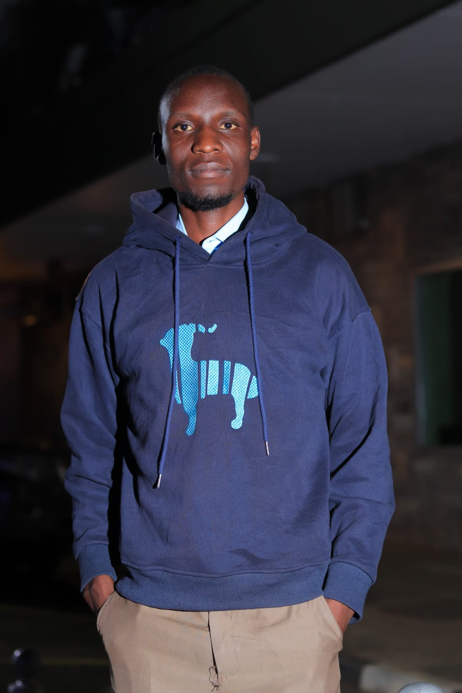

Network Monitoring Dashboard
Wireframe for a live uptime & traffic view of core switches, VPN links and ATM connections.
Figma · UI WireframeSYSTEMS ONLINE — OPEN TO WORK
ICT Graduate · Cybersecurity Enthusiast · IT Support Professional
guest@network:~$ █
I keep networks running, systems secure and users unblocked — with hands-on experience across banking IT, helpdesk support, infrastructure maintenance and threat monitoring.
01 — ABOUT

I'm an ICT professional with a strong foundation in IT support, cybersecurity, hardware maintenance, networking, customer support and enterprise systems. My background spans technical support, cybersecurity operations, infrastructure maintenance and digital banking environments — places where downtime isn't an option and every ticket has a person waiting behind it.
I hold a Bachelor of Science in Information and Communication Technology Management from Maseno University (2024), and I'm currently applying that foundation on the front line of banking IT at DTB Bank.
02 — EXPERIENCE
DTB Bank
AMC Services
Computech Limited
Tom Mboya University ICT Department
03 — SKILLS
Self-assessed proficiency, calibrated against real ticket load and lab work.
04 — FIGMA PROJECTS
Dashboard & system layouts designed in Figma to plan the tools above before they were built.
Wireframe for a live uptime & traffic view of core switches, VPN links and ATM connections.
Figma · UI WireframeHelpdesk queue layout designed to prioritise urgent hardware faults over routine requests.
Figma · Product DesignScan-to-summary report template used to communicate vulnerabilities to non-technical stakeholders.
Figma · Documentation05 — PROJECTS
Conducted vulnerability assessments and documented security recommendations for a live environment.
DeployedDesigned a helpdesk solution for tracking and resolving support requests end-to-end.
DeployedConfigured tools to monitor network traffic in real time and flag emerging threats.
ActivePerformed upgrades, troubleshooting and preventive maintenance across desktop & teller hardware.
Ongoing06 — WORK GALLERY
A look at real repair & upgrade work — screens, boards and builds handled hands-on.
07 — VALUES
Click a card to see how each one shows up in real work.
08 — TECH STACK
Certifications
09 — CONTACT
Open to IT support, systems administration and cybersecurity roles.